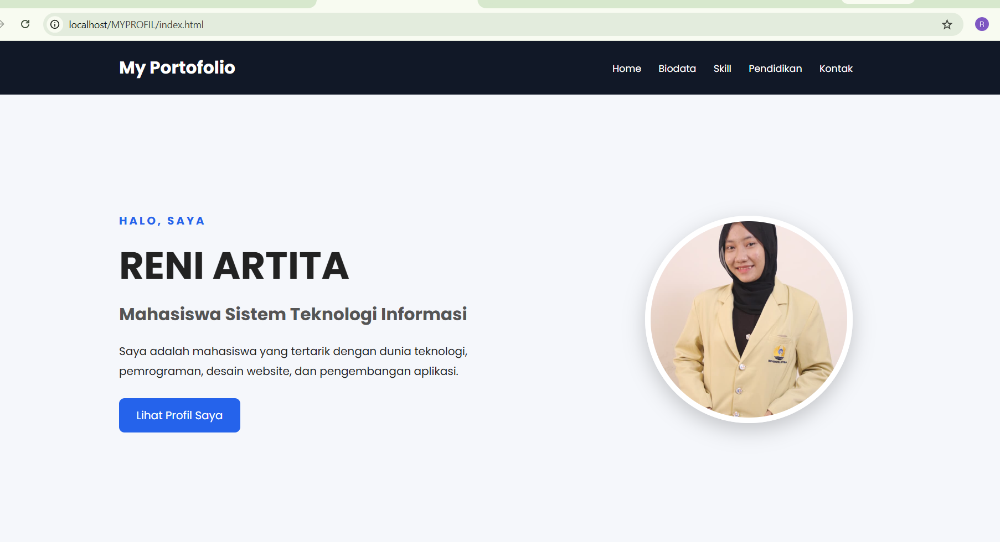
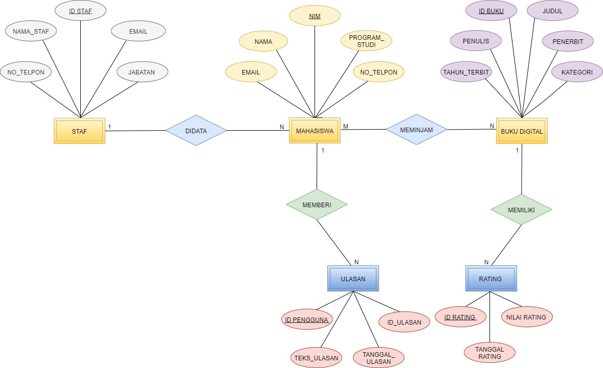
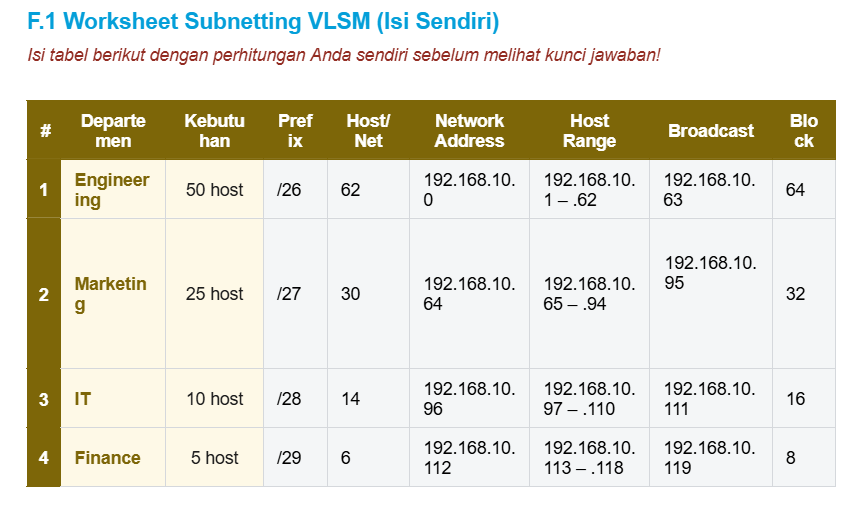
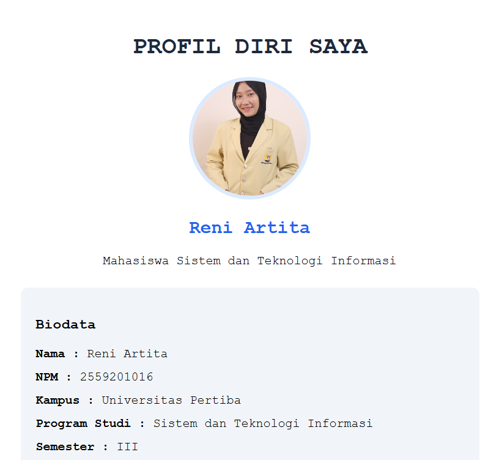

Data Mahasiswa
Program sederhana untuk mengelola data mahasiswa menggunakan bahasa pemrograman PHP
Kumpulan proyek dan tugas yang pernah saya kerjakan.
Program sederhana untuk mengelola data mahasiswa menggunakan bahasa pemrograman PHP

Website profil multihalaman yang dibuat dengan HTML, CSS, dan JavaScript murni.

Pemodelan ERD dan normalisasi tabel dari 1NF sampai BCNF.

Praktikum topologi star di Cisco Packet Tracer lengkap dengan tabel MAC address.

Latihan pembagian alamat IP dengan metode VLSM untuk beberapa jaringan.

Halaman profil sederhana pertama saya yang berisi foto, data diri, dan tombol sapaan.
Tidak ada proyek yang cocok.